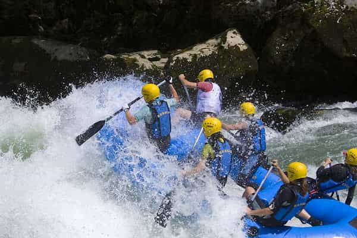
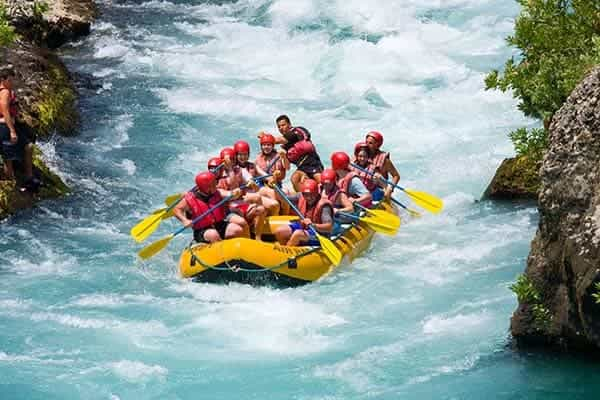
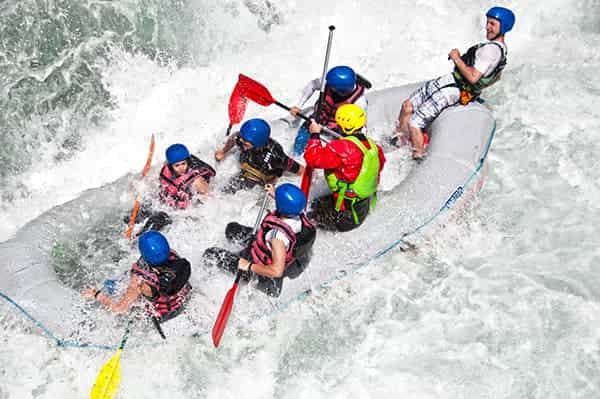
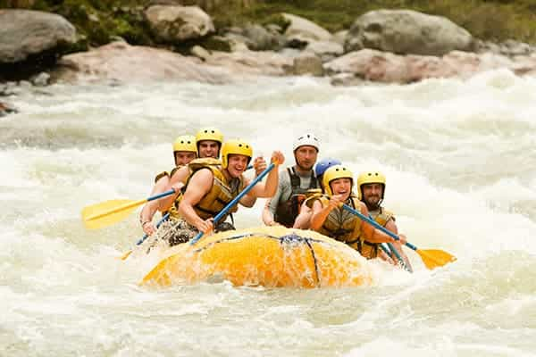
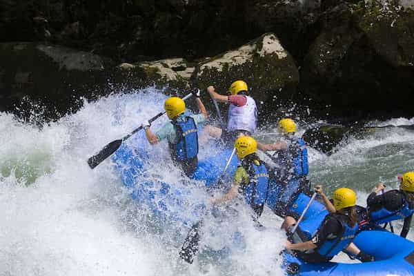
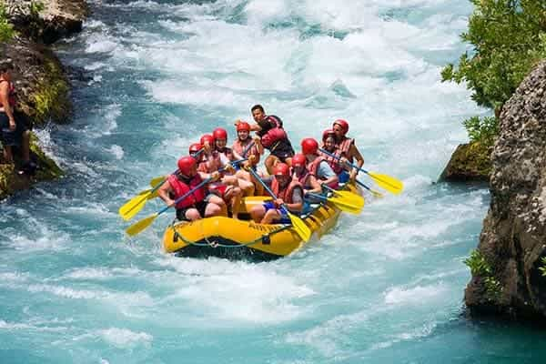
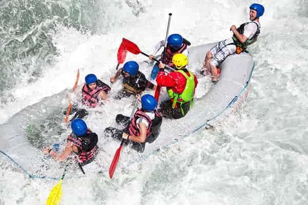
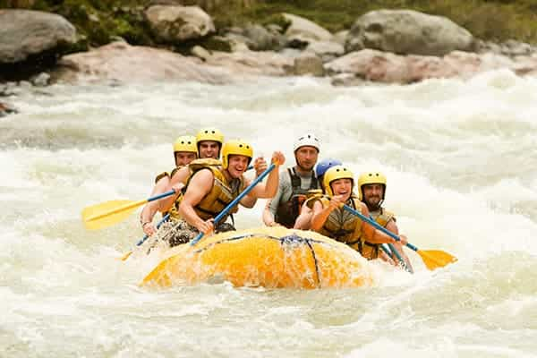

Splash Whitewater Rafting is dedicated to delivering exceptional guided rafting adventures across Oregon’s iconic rivers. We prioritize safety, expertise, and environmental stewardship, ensuring every trip offers exhilaration, camaraderie, and respect for nature. Our family-owned legacy drives us to create unforgettable experiences that thrill our guests and honor the rugged landscapes we call home.
Ride the Rapids, Live the Rush.

Splash Whitewater Rafting
History
Splash Whitewater Rafting was founded in 1985 by a group of adventurous friends in Bend, Oregon, who shared a passion for navigating the wild rapids of the Deschutes River. What began as a small operation with a handful of rafts and a dream quickly grew into a beloved local business, offering thrilling guided rafting trips to outdoor enthusiasts. By the early 1990s, Splash expanded its offerings to include multi-day excursions along the Rogue and Klamath Rivers, earning a reputation for safety, expertise, and unforgettable experiences. In 2005, the company opened a second location near the McKenzie River, tapping into Oregon’s diverse whitewater opportunities. Today, Splash Whitewater Rafting remains family-owned, employing seasoned guides and serving thousands of adventurers annually, all while staying true to its roots as a gateway to Oregon’s rugged, river-carved landscapes.
Adventure Awaits You!
 






